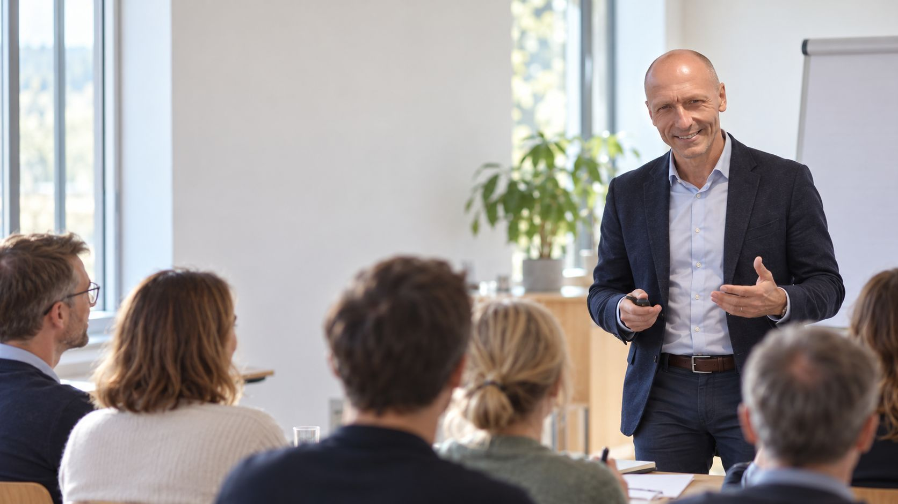
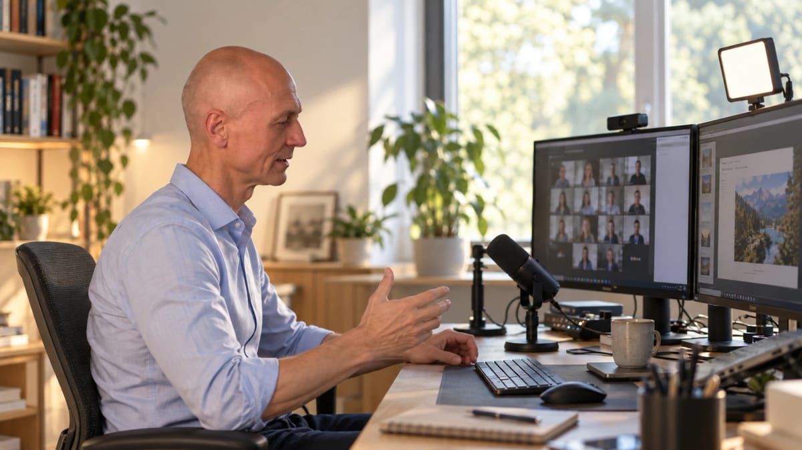

Tréninky na míru
Pracuji s lidmi a týmy na tom, jak spolu komunikují, spolupracují a zvládají každodenní tlak.
Čemu se věnuji
První školení jsem vedl zhruba před 20 lety. Od té doby mám za sebou přes 500 tréninkových dní – od technologických přes soft skills až po procesní. Baví mě všechny, každý má svou energii a smysl. Rád trénink připravuji i vedu před lidmi.
Níže jsou oblasti a témata, ve kterých jsem zvyklý pracovat. Kombinovat je lze jakkoli. Nejraději tvořím obsah přímo s účastníky na místě.
Najeďte na kartu myší nebo na ni klepněte a uvidíte, co téma obsahuje.
Lidé a komunikace
Emoce na pracovišti
Aneb jak zvládat emoce tak, aby pomáhaly, ne brzdily.
Komunikace, která funguje
Aneb jak si opravdu rozumět.
Obtížné rozhovory bez stresu
Aneb jak říct těžké věci lehčím způsobem.
Asertivita v praxi
Aneb jak zůstat sám sebou.
Neverbální komunikace v praxi
Aneb to, co říkáte tělem, je slyšet víc než slova.
Prezentační dovednosti v praxi
Aneb jak mluvit před lidmi tak, aby chtěli poslouchat.
Vedení a týmy
Vztahy v týmu
Aneb jak budovat pracovní vztahy, které drží i pod tlakem.
Budování výkonných týmů
Aneb jak pracovat spolu, ne jen vedle sebe.
Feedback, který posouvá
Aneb jak dávat zpětnou vazbu, která nebolí, ale pomáhá.
Koučink pro každodenní situace
Aneb jak vést lidi otázkami, ne příkazy.
Porady jako nástroj
Aneb jak vést porady, které nejsou ztrátou času.
Firemní kultura, která žije
Aneb jak tvořit prostředí, kde lidé chtějí být.
Já a moje energie
Mozek v práci
Aneb manuál pro váš mozek.
Mindfulness v pracovním dni
Aneb jak zpomalit, aby práce šla rychleji.
Stres management
Aneb jak zkrotit stres dřív, než zkrotí on vás.
Time management
Aneb jak řídit čas, aby neřídil vás.
Work–life balance
Aneb jak žít tak, aby práce nebyla celý život.
Osobní rozvoj bez klišé
Aneb život podle mě.
Praktické nástroje
AI nástroje v každodenní práci
Aneb jak využít AI chytře, prakticky a bez strachu.
Efektivita v Microsoft Office
Aneb jak udělat víc práce za méně kliků.
Kreativita pro nekreativce
Aneb jak zapnout kreativní režim, když ho potřebujete.
Jak může spolupráce vypadat
Rozsah i obsah volím podle toho, co potřebujete. Nejde o hotový balíček, ale o trénink postavený na míru.
-
Dvouhodinový workshop
Jedno téma, konkrétní nástroje a rychlé vyzkoušení v praxi.
-
Půldenní workshop
Prostor probrat jedno téma do hloubky a procvičit si ho.
-
Celodenní trénink
Ucelené téma s dostatkem času na praktická cvičení a diskusi.
-
Vícedenní program
Postupná práce se skupinou nebo týmem. Může proběhnout vcelku, nebo ve více samostatných termínech s odstupem, aby si lidé mezi nimi mohli věci vyzkoušet v praxi a pak se k nim vrátit.

Forma dodání
Prezenčně nebo online
Obě varianty jsou možné. Měkká témata, jako je komunikace, emoce, asertivita nebo neverbální komunikace, doporučuji naživo v učebně, protože online se řeč těla ztrácí. Praktická témata, například AI, Office nebo time management, fungují online dobře.
Příprava
Každému tréninku předchází rozhovor, ve kterém si vše ujasníme:
-
Cíl
Čeho má trénink dosáhnout.
-
Cílová skupina
Kdo se ho zúčastní a v jaké je situaci.
-
Skutečné potřeby
Co lidé opravdu řeší.
-
Obsah
Podle výsledků předchozích kroků sestavím program na míru.
-
Měření a vyhodnocení
Feedback po akci a po delší době.
Technologie nám pomáhají
Podle potřeby a podle typu tréninku využívám technologie, které práci s lidmi zjednoduší a udělají ji přehlednější. Nejsou cílem, jsou prostředkem.
Webové stránky na míru
Pro některé tréninky připravím vlastní webovou stránku, kde jsou pro účastníky pozvánka, organizační informace a materiály na jednom místě.
Komunikace s účastníky
Před tréninkem i po něm zůstává komunikace přehledná a nic se neztrácí v e-mailech.
Měření a vyhodnocení
Zpětnou vazbu a měření účinnosti sbírám přes speciálně připravené webové formuláře. Výsledky pak lze přehledně shrnout a porovnat s cílem, který jsme si na začátku stanovili.
Cvičení s využitím AI
V praktických cvičeních pracují účastníci s AI nástroji, například při nácviku rozhovorů nebo při řešení situací z jejich práce. Mohou si tak v bezpečném prostředí vyzkoušet, co by v praxi mohlo být náročné.
Pojďme to vyzkoušet
První rozhovor je nezávazný. Napište mi nebo zavolejte a domluvíme se na tom, jak dál.